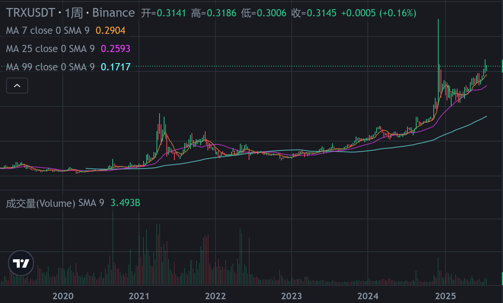

加密货币的介绍
标的挑选 （“标的”是一个常用于金融、法律、投资、保险、交易等领域的术语，含义取决于具体语境，但本质都是指“被操作的对象”或“目标事物”。）
一级币市场
“一级币市场”在加密货币领域，通常指的是新币首次发行和销售的市场，也就是投资者第一次买到某个币的渠道，类似传统金融中的“一级市场”（Primary Market）。
具体解释
一级币市场是项目方或团队**首次公开发行加密货币（代币）**的场所，投资者可以直接从项目方或官方渠道购买新币。
这种发行方式包括：
- ICO（Initial Coin Offering）：首次代币发行，项目团队直接向公众出售代币融资。
- IEO（Initial Exchange Offering）：交易所发行，项目在交易所平台上发行新币。
- IDO（Initial DEX Offering）：去中心化交易所发行，通过去中心化平台发售代币。
投资者在一级市场购入新币后，可以等待币价上涨，然后在二级市场（如币安、火币等交易所）上自由买卖。
一级币市场 vs 二级币市场
| 特点 | 一级币市场 | 二级币市场 |
|---|---|---|
| 交易对象 | 新发行的代币 | 已流通代币的买卖 |
| 价格形成 | 由项目方或发行机制设定 | 市场供需决定 |
| 参与者 | 早期投资者、机构、普通用户 | 任何交易者 |
| 风险 | 高风险，项目不确定性大 | 市场波动风险 |
| 目的 | 融资、启动项目 | 提供流动性，方便买卖 |
总结
一级币市场就是加密项目代币“第一次发售”的地方，投资者可以直接从项目方手里买到新币，属于高风险高收益的早期投资渠道。
稳定币
什么是稳定币？
稳定币（Stablecoin） 是一种加密货币，但它的价值通常锚定在某种稳定资产上，最常见的是美元、欧元、黄金等，以减少价格波动，保持币值相对稳定。
稳定币的主要类型
| 类型 | 说明 | 例子 |
|---|---|---|
| 法币抵押型 | 由法币（如美元）做资产支持，1:1锚定 | USDT、USDC、TUSD、GUSD |
| 加密资产抵押型 | 由其他加密货币抵押支持，超额抵押保障 | DAI |
| 算法稳定币 | 通过算法调节供应量维持币值稳定 | Terra UST（已崩盘）等 |
稳定币的作用
- 降低加密市场的波动风险，方便交易和结算；
- 作为数字货币中的“数字美元”等稳定资产；
- 支持 DeFi 应用、跨境支付、数字资产储值等。
简单总结
稳定币是价格稳定的数字货币，常用于规避加密市场的价格波动，方便交易和资产管理。
稳定币 TUSD
评价： 只要是公司，就总有一天会解散。 不可靠。
TUSD 是 TrueUSD 的代币符号，是一种法币抵押型稳定币，其价值锚定美元（1 TUSD ≈ 1 USD）。TrueUSD 是由 TrustToken 公司发行，旨在提供透明、安全、合规的美元稳定币。
一、TUSD 基本信息
| 属性 | 内容 |
|---|---|
| 名称 | TrueUSD |
| 代币符号 | TUSD |
| 类型 | 稳定币（法币抵押型） |
| 发行方 | TrustToken |
| 上线时间 | 2018 年 |
| 区块链标准 | ERC-20（以太坊）、BEP-20（币安智能链）等多链支持 |
二、TrueUSD 的特点
- 美元1:1锚定，每发行一枚 TUSD，背后都有真实美元资产作为担保；
- 资金托管由多家第三方受托人（信托公司）监管，确保资金安全；
- 定期进行第三方审计，提升透明度；
- 交易速度快，费用低，适合跨链、跨境支付与交易结算；
- 支持多条主流公链，便于DeFi和交易所使用。
三、TUSD 的用途
| 用途 | 说明 |
|---|---|
| 稳定交易媒介 | 在加密市场中用作避险资产和交易对 |
| 跨链资产桥接 | 作为不同链间稳定价值的桥梁 |
| DeFi 抵押资产 | 参与借贷、流动性挖矿等去中心化金融业务 |
| 跨境支付 | 用于快速、低成本的国际转账 |
四、与其他稳定币对比
| 稳定币 | 抵押类型 | 透明度 | 代表项目 |
|---|---|---|---|
| TUSD | 法币抵押 | 高，第三方托管与审计 | TrueUSD (TrustToken) |
| USDT | 法币抵押 | 争议较多，透明度不足 | Tether |
| USDC | 法币抵押 | 高，受监管严格 | Circle |
| DAI | 加密资产抵押 | 高，完全去中心化 | MakerDAO |
五、总结
TUSD 是一种以美元资产支持的稳定币，注重合规和透明，适合在加密市场中作为稳定价值的媒介和桥梁。
稳定币 USDC
评价： 又是一个美元稳定币。 这个公司看起来挺大的，但道理还是一样的。只要是公司，就总有一天会解散。 短期看起来还可以。
USDC（全称 USD Coin）是一种广泛使用的美元稳定币，由美国金融科技公司 Circle 和 Coinbase 联合推出，1 USDC 价值通常等于 1 美元，旨在为数字资产交易和支付提供稳定的价值锚定。
一、USDC 基本信息
| 属性 | 内容 |
|---|---|
| 名称 | USD Coin |
| 代币符号 | USDC |
| 类型 | 法币抵押稳定币 |
| 发行方 | Circle 和 Coinbase |
| 上线时间 | 2018 年 |
| 区块链标准 | ERC-20（以太坊）、Algorand、Solana、Stellar、Tron 等多链支持 |
二、USDC 的特点
- 1:1锚定美元，每枚 USDC 背后都有真实美元资产或同等价值的资产作为支持；
- 高透明度，由第三方会计师事务所定期审计资金托管情况，确保储备充足；
- 多链支持，方便用户跨链转账和交易；
- 广泛应用，在加密交易所、DeFi 协议、支付和跨境汇款中被广泛接受。
三、USDC 的用途
| 用途 | 说明 |
|---|---|
| 交易媒介 | 在加密市场作为稳定交易对，规避价格波动风险 |
| 支付结算 | 跨境支付和日常交易的稳定货币 |
| DeFi 抵押资产 | 参与借贷、流动性挖矿等DeFi业务 |
| 资产桥接 | 支持跨链和不同区块链间的资产转移 |
四、USDC 与其他稳定币对比
| 稳定币 | 发行方 | 透明度 | 代表特点 |
|---|---|---|---|
| USDC | Circle & Coinbase | 高，第三方审计 | 法币抵押，合规性强 |
| USDT | Tether | 透明度有争议 | 市场份额最大 |
| TUSD | TrustToken | 高，第三方审计 | 合规且透明 |
| DAI | MakerDAO | 加密资产抵押，去中心化 | 去中心化、无中心发行 |
五、总结
USDC 是一种透明且合规的美元抵押稳定币，广泛用于加密资产交易和支付场景，是加密市场中重要的“数字美元”。
稳定币USDT
USDT，全称 Tether，是一种最早也是最广泛使用的美元稳定币，其设计目标是将其价值与美元1:1锚定，方便加密货币市场中的交易和资金流动。
一、USDT 基本信息
| 属性 | 内容 |
|---|---|
| 名称 | Tether (USDT) |
| 类型 | 法币抵押稳定币 |
| 发行方 | Tether Limited |
| 上线时间 | 2014年 |
| 区块链标准 | 多链支持，如ERC-20（以太坊）、TRC-20（波场）、OMNI（比特币网络）等 |
二、USDT 的特点
- 1:1美元锚定：理论上每发行1个USDT，Tether公司在银行账户里有1美元作为储备资产；
- 流通量最大：是市值最大的稳定币，广泛被各大交易所和平台接受；
- 支持多条区块链：便于跨链转账和交易；
- 争议和透明度：曾因储备金透明度和合规性问题备受质疑，但近年有所改善，定期发布储备证明。
三、USDT 的用途
| 用途 | 说明 |
|---|---|
| 稳定交易媒介 | 规避加密市场价格波动，方便交易 |
| 资金转移 | 跨境和链上快速转账 |
| DeFi 参与 | 参与借贷、流动性挖矿等 |
| 资产储存 | 短期储存价值，避免币价剧烈波动 |
四、与其他稳定币对比
| 稳定币 | 透明度 | 市场地位 | 发行机制 |
|---|---|---|---|
| USDT | 争议较多，逐步改善 | 市场份额最大 | 银行法币储备支持 |
| USDC | 高，定期审计 | 广泛应用 | 银行法币储备支持 |
| TUSD | 高，第三方审计 | 合规性强 | 银行法币储备支持 |
| DAI | 去中心化，完全公开 | 去中心化金融主力 | 加密资产抵押 |
五、总结
USDT 是最早也是最流行的美元稳定币，广泛应用于加密市场中作为稳定的交易媒介和资产桥梁。
稳定币Terra UST （已崩盘）
Terra UST（全称 TerraUSD）是一种算法稳定币，原本是由 Terra 区块链生态系统推出的美元锚定稳定币，设计目标是实现与美元 1:1 的价格挂钩，但它的稳定机制依赖于与另一种加密资产 LUNA 之间的算法调节，而不是完全由美元或法币资产支持。
一、Terra UST 基本信息
| 属性 | 内容 |
|---|---|
| 名称 | TerraUSD (UST) |
| 类型 | 算法稳定币 |
| 所属生态 | Terra 区块链 |
| 发行方式 | 通过燃烧或铸造 LUNA 代币调节供给 |
| 设计目标 | 价格锚定美元，1 UST ≈ 1 USD |
二、Terra UST 工作原理（算法机制）
- 铸造与销毁机制：用户通过燃烧 LUNA 来铸造 UST，反之通过燃烧 UST 来获得 LUNA，以调节市场供需，维持 UST 价格稳定；
- 去中心化：无实际美元储备支撑，完全依赖算法和市场自我调节；
- 流动性激励：Terra生态内各种应用（如Anchor协议）提供利率激励，增加UST需求。
三、历史与风险
- 2022年5月崩盘：UST 在 2022 年 5 月失去与美元的锚定，价格大幅下跌，导致 Terra 生态崩溃，LUNA 价格暴跌，市场信心崩溃；
- 原因：算法稳定币机制在极端市场波动时难以维持价格锚定，缺乏充足的抵押资产做支撑；
- 影响：大量投资者损失惨重，引发整个加密市场的震荡。
四、总结
Terra UST 是一种算法稳定币，设计上通过 LUNA 代币调节供给以保持与美元锚定，但因算法机制在市场极端波动时失效，曾导致严重崩盘。
垃圾币BONK
评价： 垃圾币不解释。

BONK（代币符号：BONK）是一个基于 Solana 区块链的狗狗主题模因币（meme coin），于 2022 年 12 月 25 日正式推出 。BONK 的推出旨在为 Solana 社区带来一个去中心化、有趣且公平的代币，强调社区参与和去中心化的理念。(Techopedia, Gate.com)
Meme Coin（模因币） 是一种基于互联网文化和社交媒体热点而产生的加密货币，通常起源于某个网络流行梗、搞笑形象或者病毒式传播的趣味主题。它们的价值和热度很大程度上依赖于社区的支持和炒作，而不是传统项目的技术或应用基础。
🐶 BONK 的核心特点
社区驱动：BONK 的50%代币通过空投分发给 Solana 社区的成员，包括开发者、NFT 创作者、艺术家等，体现了去中心化和社区主导的精神 。(Gate.com)
代币经济学：BONK 的总供应量为 100 万亿，其中 50% 通过空投分发，21% 分配给早期出资者，16% 用于社区活动，5% 用于初始流动资金，5% 用于营销活动 。(datawallet.com)
生态系统集成：BONK 被集成到 Solana 区块链上的多个应用程序和协议中，包括去中心化金融（DeFi）、游戏平台和 NFT 应用程序，成为 Solana 生态系统的重要组成部分 。(datawallet.com)
📈 BONK 的市场表现
自推出以来，BONK 迅速吸引了大量关注，成为 Solana 上交易量第三大的代币，仅次于 SOL 和 USDC 。其价格和市值的波动性较大，主要受到市场情绪和社区活动的影响。(datawallet.com)
🔮 BONK 的未来展望
随着 Solana 生态系统的发展，BONK 作为其中的模因币，可能会继续在社区中发挥重要作用。然而，其价格和市场表现仍然高度依赖于社区的参与度和市场的整体情绪。投资者在考虑 BONK 时，应关注其在 DeFi、NFT 和其他应用领域的实际应用情况，以评估其长期价值。
如果您对 BONK 的购买方式、存储方法或在 Solana 生态系统中的具体应用有兴趣，欢迎继续提问，我将为您提供详细的解答。
垃圾币TRUMP
评价： 人总是会死的。 特朗普死了，特朗普币怎么办？还有什么价值？而且他也不可能永远是总统。
TRUMP（代币符号：$TRUMP）是由美国总统唐纳德·特朗普推出的一种模因币（meme coin），旨在庆祝特朗普的领导风格和“Fight, Fight, Fight”口号。该代币于2025年1月17日在Solana区块链上发行，初始供应量为10亿个，其中200百万个通过首次代币发行（ICO）公开发售，其余由特朗普家族控制的公司持有 。(Kraken, 维基百科)
🔍 核心特点
- 发行平台：基于Solana区块链，旨在提供快速且低成本的交易体验。
- 供应量：总供应量为10亿个，其中200百万个已公开发售，其余由特朗普家族控制的公司持有，计划在三年内逐步释放 。
- 市场表现：截至2025年7月25日，$TRUMP的市值约为19.7亿美元，24小时交易量约为1.48亿美元。
- 用途定位：作为一种模因币，$TRUMP主要用于社区互动和文化表达，并非旨在作为投资工具。(维基百科, CoinCodex)
📈 市场表现（截至2025年7月25日）
- 当前价格：约$9.84 USD
- 24小时涨幅：-0.46%
- 市值：约19.7亿美元
- 24小时交易量：约1.48亿美元
- 流通供应量：约200百万个TRUMP代币
- 最高价格：$76.98（2025年1月19日）
- 最低价格：$4.29（2025年1月18日）(CoinCodex)
⚠️ 风险提示
$TRUMP作为一种模因币，其价值波动性较大，投资者应谨慎评估风险。此外，特朗普家族在该项目中的利益关系引发了伦理和利益冲突的讨论。在投资前，建议深入了解项目背景和市场动态。(AP News)
✅ 如何购买
$TRUMP可以在多个加密货币交易所进行交易，包括Binance、KuCoin等。投资者可以通过这些平台使用法币或其他加密货币购买$TRUMP。建议在官方渠道获取最新的购买信息。(CoinCodex, CoinStats)
如果您对$TRUMP的投资策略、技术细节或其他相关信息有兴趣，欢迎继续提问！
价值币 TRX

TRX 是 Tron（波场）区块链平台的原生加密货币，全称 Tronix，由中国创业者 孙宇晨（Justin Sun） 发起，是一个主打高性能、低手续费、去中心化内容分享与智能合约的区块链项目。
一、TRX 基本信息
| 属性 | 内容 |
|---|---|
| 项目名称 | Tron / 波场 |
| 代币符号 | TRX |
| 创始人 | 孙宇晨（Justin Sun） |
| 上线时间 | 2017 年 |
| 共识机制 | DPoS（委托权益证明） |
| 链类型 | 公链（支持智能合约） |
| 总发行量 | 1000 亿个（通胀模型） |
二、TRX 有什么用途？
| 用途 | 说明 |
|---|---|
| 支付手续费 | 交易、部署智能合约时支付手续费（一般很低）； |
| 参与投票 | 用 TRX 抵押可以投票选出超级代表（SR）； |
| 质押挖矿 | 抵押 TRX 可获得能源/带宽等资源，同时有机会获得奖励； |
| 使用 DApps | 支付游戏、DeFi、NFT 等 Tron 上的应用； |
| 跨链资产桥梁 | 支持与 ETH、BSC 等链互通的 TRC20 版本资产； |
三、TRON 公链的特点
| 特点 | 说明 |
|---|---|
| 高 TPS（交易吞吐量） | 每秒可处理上千笔交易，比以太坊快很多； |
| 低手续费 | 一般交易不需支付或仅需极少 TRX（可用带宽/能量抵扣）； |
| 高活跃用户量 | 因低门槛吸引大量应用，如 USDT 最大发行网络就是 Tron； |
| DeFi 生态广 | 包括 JustLend、JustSwap、SunSwap 等； |
| TRC-20 标准 | 类似 ERC-20，是 Tron 链上代币发行标准； |
四、TRX 与 USDT 的关系
Tron 是USDT 最大的发行网络之一：
- TRC-20 USDT 是 USDT 的一种形式（和 ERC20、BEP20 并列）；
- 因为转账快、几乎无手续费，很多交易所和钱包默认使用 TRC20 USDT；
- 这也带动了 TRX 生态的使用和需求。
五、TRX 与以太坊的区别
| 项目 | TRON (TRX) | Ethereum (ETH) |
|---|---|---|
| 共识机制 | DPoS | PoS |
| 手续费 | 极低（有时为 0） | 较高（尤其繁忙时） |
| 性能 | 高（>2000 TPS） | 中等（现约 15~30 TPS） |
| 编程语言 | Solidity 等 | Solidity |
| 智能合约兼容 | 高度兼容以太坊 | 原生 |
| 去中心化程度 | 相对较低（SR有限） | 较高（节点分布广） |
六、争议与批评
- 中心化问题：超级代表（SR）数量固定，部分由团队/关联方掌控；
- 营销过度：孙宇晨因频繁炒作（如拍巴菲特午餐、收购 BitTorrent）饱受争议；
- 项目重复：被批评为抄袭白皮书、复制以太坊功能；
- 政治风险：创始人中国背景，曾遭遇监管争议与封杀。
七、TRX 投资风险
- 与孙宇晨强绑定，风险集中于个人品牌；
- 项目发展迅速，但生态也杂乱、质量参差；
- 价格波动剧烈，长期走势不如 BTC/ETH 稳定；
- 被部分交易所限制（如美区某些平台屏蔽 TRX）；
八、一句话总结：
TRX 是波场链的原生代币，主打高性能与低成本交易，拥有大量活跃用户，但也存在中心化和争议性。
平台币CAKE
CAKE 是去中心化交易平台 PancakeSwap 的原生代币。
一、基本信息
| 属性 | 内容 |
|---|---|
| 币名 | CAKE |
| 所属平台 | PancakeSwap（煎饼交易所） |
| 区块链 | BNB Chain（原 Binance Smart Chain） |
| 代币类型 | BEP-20 |
| 上线时间 | 2020 年 9 月 |
二、CAKE 的主要用途
| 用途 | 说明 |
|---|---|
| 流动性挖矿 | 用户提供流动性可获得 CAKE 奖励 |
| 质押奖励 | 将 CAKE 质押到 Syrup 池中可获得新代币 |
| 治理投票 | 持币用户可对 PancakeSwap 的升级方向投票 |
| 彩票和NFT | 可用于参与平台的抽奖、NFT活动等 |
| 手续费折扣 | 在特定场景中获得交易优惠 |
三、PancakeSwap 是什么？
PancakeSwap 是运行在 BNB Chain 上的最大去中心化交易所（DEX），功能类似于以太坊上的 Uniswap，但手续费更低、交易速度更快。
它允许用户：
- 进行代币兑换（Swap）；
- 添加流动性获得交易手续费；
- 参与 DeFi 游戏（如彩票、NFT 市场）；
- 参与 IDO（初始 DEX 发行）等。
四、风险与注意事项
- CAKE 是通缩型代币，有销毁机制，但整体属于高波动的 DeFi 项目代币；
- 虽然 PancakeSwap 背靠币安链生态，但仍属于去中心化项目，用户需自行管理私钥；
- 投资需注意代币价格波动风险，建议了解 DeFi 原理再参与。
总结
CAKE 是 PancakeSwap 去中心化交易平台的代币，用于激励流动性提供、治理、抽奖等，是 DeFi 世界中的热门项目之一。
平台币BNB
BNB（币安币，Binance Coin） 是由全球最大加密货币交易所 Binance（币安） 发行的原生代币。
🔍 一、基本信息
| 属性 | 内容 |
|---|---|
| 名称 | Binance Coin（币安币） |
| 代号 | BNB |
| 区块链 | 原为以太坊 ERC-20，现为 BNB Chain（包含 BNB Beacon Chain 与 BNB Smart Chain） |
| 总量上限 | 2 亿枚（逐步销毁至 1 亿枚） |
| 当前类型 | 通缩型平台币 |
| 上线时间 | 2017 年 |
🧩 二、BNB 的主要用途
| 用途 | 说明 |
|---|---|
| 交易手续费折扣 | 在币安交易所使用 BNB 支付手续费有折扣 |
| 链上支付手续费 | 在 BNB Smart Chain 上支付 Gas 费 |
| 参与 Launchpad | 币安的 IEO 项目投资资格 |
| 质押、挖矿 | 可用于参与 BNB Chain 质押获得收益 |
| 去中心化应用 | 用于 DEX、NFT、DeFi 应用中 |
| 销毁机制 | 定期销毁，通缩属性增强价值稀缺性 |
🔥 三、BNB 的销毁机制（通缩）
BNB 初始总量为 2 亿枚，币安承诺逐步销毁至 1 亿枚：
- ✅ 季度销毁：币安用利润买回并销毁 BNB；
- ✅ 实时销毁（BEP-95）：每笔链上交易的 Gas 费中一部分会被实时销毁；
- 🔥 已销毁超 44%，目前供应量在 1.1 亿枚左右（具体可在 bnbburn.info 查看）。
🏗️ 四、BNB Chain 是什么？
BNB Chain 是 Binance 推出的区块链系统，包括：
- BNB Beacon Chain（原 Binance Chain）：处理治理与资产管理；
- BNB Smart Chain（BSC）：兼容以太坊，支持智能合约、DeFi、NFT 等；
它是目前最活跃的区块链之一，支持大量项目。
⚠️ 风险提示
- 尽管 BNB 有实际使用场景，但作为加密资产仍有价格波动；
- 虽非严格意义的“去中心化币种”，但币安控制力逐步分散中；
- 监管政策会对 BNB 和 Binance 产生较大影响。
✅ 总结
BNB 是币安交易所的原生代币，功能多样，通缩机制明确，已成为全球市值前五的加密资产之一，广泛用于交易、链上活动与项目投资中。
平台币FTX
FTX 是一个曾经非常知名的加密货币交易所，已于 2022 年 11 月倒闭，是加密行业历史上最大的一次危机之一。
🧾 一、FTX 的基本信息
| 项目 | 内容 |
|---|---|
| 名称 | FTX |
| 类型 | 中心化加密货币交易所（CEX） |
| 成立时间 | 2019 年 |
| 创始人 | Sam Bankman-Fried（简称 SBF） |
| 总部（曾） | 巴哈马 |
| 主要产品 | 现货交易、合约交易、杠杆代币、衍生品等 |
| 原生代币 | FTT |
| 倒闭时间 | 2022 年 11 月 11 日 宣布申请破产保护 |
📉 二、FTX 倒闭原因（简要）
FTX 的倒闭源于一系列严重的财务违规操作和欺诈行为：
挪用用户资金：
- 用户在 FTX 存入的资产，被非法转移给其姊妹公司 Alameda Research（量化交易公司），用于高风险投资。
资产造假：
- Alameda 的资产大部分是 FTX 自己发行的代币 FTT，虚增了实际价值。
信任危机爆发：
- 2022 年 11 月，币安 CEO CZ 在公开质疑 FTX 财务状况后，引发大规模用户挤兑，FTX 无法兑付资金。
申请破产：
- 2022 年 11 月 11 日，FTX 宣布破产，涉及客户资金超过 80 亿美元。
⚖️ 三、法律后果与进展
- 创始人 SBF 被指控多项金融欺诈罪名，包括诈骗、洗钱等；
- 2023 年末，SBF 被美国法院判定罪名成立；
- FTX 的新管理团队正设法追回资产，部分用户资金预计在未来几年有望返还部分。
🔥 四、FTX 事件的影响
| 影响方面 | 内容 |
|---|---|
| 行业信任危机 | 引发对中心化交易所的广泛不信任，CEX 监管压力大增 |
| 监管加强 | 各国政府加快制定加密资产法律，例如美国 SEC 加强审查力度 |
| 加密市场下跌 | 多种加密货币暴跌，整个行业市值缩水数千亿美元 |
| 项目牵连 | 多家机构、基金因投资或存款 FTX 而破产或亏损 |
💡 五、FTT 是什么？
FTT 是 FTX 平台发行的代币，曾用于手续费折扣、质押、投票权等功能。
随着 FTX 倒闭，FTT 价值几乎归零，已被主流交易所下架，不再有实际用途。
✅ 总结
FTX 曾是全球第二大加密货币交易所，但由于严重的欺诈与管理不善，在 2022 年轰然倒塌。其倒闭事件对整个加密市场带来深远影响，是区块链历史上最大的丑闻之一。
如你想了解如何避免使用不安全的交易所、去中心化交易的替代方案，我也可以继续介绍。
Bitcoin SV
BSV（Bitcoin SV） 是一种加密货币，全称 Bitcoin Satoshi Vision，于 2018 年从 Bitcoin Cash（BCH） 硬分叉而来。它声称要回归中本聪的原始比特币愿景，强调“稳定性、大区块、高扩展性”。
一、BSV 的基本信息
| 项目 | 内容 |
|---|---|
| 名称 | Bitcoin SV（Satoshi Vision） |
| 简称 / 代号 | BSV |
| 起源 | 从 BCH 于 2018 年硬分叉 |
| 共识机制 | 工作量证明（PoW） |
| 最大供应量 | 2100 万个（与 BTC、BCH 相同） |
| 区块链设计理念 | 大区块、低费用、高吞吐 |
| 核心人物 | Craig Wright（自称中本聪） |
二、BSV 的诞生背景
BSV 是 比特币家族中的“第三次分裂”：
- BTC → 原始比特币（2009）
- BCH → 2017 年从 BTC 分裂，争议在于“要不要扩大区块容量”
- BSV → 2018 年从 BCH 分裂，进一步扩大区块（甚至取消限制）
分裂原因：
- BCH 中一部分人主张进一步回归“中本聪原意”，不认同 BCH 开发者主导的方向；
- 在 Craig Wright（自称中本聪）领导下，推出了 BSV；
- 分裂过程中社区对立严重，被称为“哈希战争”（Hash War）。
三、BSV 的特点
| 特点 | 说明 |
|---|---|
| 超大区块 | 当前区块大小限制为 4GB（远大于 BTC 的 1-4MB、BCH 的 32MB）； |
| 低手续费 | 由于吞吐量高、网络空闲，交易成本非常低； |
| 稳定性优先 | 项目团队坚持“不频繁升级协议”，强调代码稳定性； |
| 支持复杂应用 | 声称可承载 Web3、智能合约、链上大数据、NFT 等功能； |
| Craig Wright | 项目背书者为自称中本聪的澳洲程序员 Craig Wright（饱受争议）； |
四、与 BTC、BCH 的对比
| 特性 | BTC | BCH | BSV |
|---|---|---|---|
| 分叉时间 | 原始 | 2017（从 BTC 分出） | 2018（从 BCH 再分出） |
| 区块大小 | 32MB | 4GB（理论值） | |
| 共识机制 | PoW | PoW | PoW |
| 主张 | 去中心化、保守升级 | 增加交易容量 | 回归中本聪愿景，链上扩展一切 |
| 开发活跃度 | 极高 | 中等 | 相对较低 |
| 主流支持 | 广泛 | 有限 | 极少（被多个交易所下架） |
五、BSV 的应用场景（主张）
BSV 社区提出“链上一切”，试图将以下内容放在区块链上运行：
- 链上存储与计算（区块链数据库）
- 链上社交（如 Twetch）
- 智能合约与 Web3 项目（通过 sCrypt 语言）
- 大数据系统（比如 Metanet）
但现实中，BSV 的实际生态应用规模、开发者活跃度远不如 ETH、BSC 等主流链。
六、争议与风险
| 争议 / 风险 | 说明 |
|---|---|
| Craig Wright 风波 | 自称“中本聪”，但缺乏可信证据，多次遭社区质疑和法律纠纷； |
| 中心化争议 | 开发主导者高度集中，社区不够多元化； |
| 缺乏主流支持 | 多个交易所（如 Binance、Kraken）已下架 BSV； |
| 链上扩展的实用性存疑 | 超大区块虽可行，但对节点存储和带宽要求极高； |
| 流动性和生态不足 | 开发者和用户数量少，缺乏网络效应； |
七、一句话总结
BSV 是一个争议极大的比特币分支项目，主张用大区块来承载一切数据，试图回归中本聪愿景，但因中心化、争议人物和缺乏主流支持而被边缘化。
ADA
ADA 是加密货币 Cardano（卡尔达诺）区块链 的原生代币，由前以太坊联合创始人 Charles Hoskinson（查尔斯·霍斯金森） 发起。它是一个主打 科学方法、形式验证、安全性强、低能耗的智能合约平台。
一、ADA 简介
| 属性 | 内容 |
|---|---|
| 项目名称 | Cardano |
| 代币名称 | ADA（以 19 世纪数学家 Ada Lovelace 命名） |
| 上线时间 | 2017 年 |
| 创始人 | Charles Hoskinson（以太坊早期核心人物） |
| 共识机制 | PoS（权益证明，具体叫 Ouroboros） |
| 链类型 | 公链，支持智能合约 |
| 最高总供应量 | 450 亿个 |
二、Cardano 有什么特别之处？
Cardano 是一个与以太坊并列的“第三代区块链平台”，相比 BTC（第一代）和 ETH（第二代），主打：
| 特点 | 说明 |
|---|---|
| 科学驱动开发 | 所有设计基于学术论文，代码开发走“同行评审”路线； |
| 分层架构 | 把账本层与智能合约层分开，便于维护和升级； |
| 环保低能耗 | 使用 PoS 共识，不依赖能耗巨大的挖矿； |
| 形式化验证 | 智能合约支持数学验证，提高安全性（用 Plutus 语言）； |
| 可扩展性强 | 理论上能支持大规模去中心化应用与交易； |
三、ADA 的用途
| 用途 | 说明 |
|---|---|
| 交易手续费支付 | 在 Cardano 网络中支付交易、部署合约的费用； |
| 质押/投票 | 用户可以将 ADA 质押进“权益池”以获得奖励，并参与治理投票； |
| 治理权重 | 社区成员可以使用 ADA 表决项目发展方向（项目走向真正去中心化）； |
| DeFi / NFT | Cardano 上也支持 DeFi 协议与 NFT 市场（如 Minswap、JPG Store 等）； |
四、Cardano 开发阶段（官方称“五个时代”）
| 阶段名 | 内容 | 状态 |
|---|---|---|
| Byron | 基础架构，钱包功能 | 已完成 |
| Shelley | 去中心化与质押机制 | 已完成 |
| Goguen | 智能合约上线（Plutus、Marlowe） | 已完成 |
| Basho | 扩容、侧链等性能增强 | 进行中 |
| Voltaire | 完整社区治理 | 逐步部署中 |
五、与其他主流币种的对比
| 特性 | ADA/Cardano | ETH/Ethereum | BNB/BNB Chain |
|---|---|---|---|
| 共识机制 | PoS（Ouroboros） | PoS（Casper） | PoSA |
| 手续费 | 低 | 中-高（拥堵时昂贵） | 低 |
| 去中心化 | 高 | 高 | 较低（控制权集中） |
| 智能合约 | Plutus | Solidity | Solidity |
| 开发理念 | 学术严谨 | 迭代开发 | 速度优先 |
六、优势与挑战
✅ 优势：
- 高安全性（形式验证 + 分层架构）
- 真正低能耗的区块链（PoS）
- 开发稳健，适合长线投资者
- 去中心化程度较高（上千个质押池）
⚠️ 挑战：
- 开发速度偏慢（同行评审 +保守迭代）
- 生态尚在发展，DeFi、NFT 规模不如 ETH、Solana
- 与以太坊不兼容（不支持 EVM，开发门槛较高）
- 市场热度起伏较大
七、一句话总结：
ADA 是 Cardano 区块链的核心代币，主打学术严谨、安全可靠、低能耗，是“第三代区块链”的代表之一，但生态仍在成长中。
MKR（Maker）
MKR（Maker） 是以太坊上的一个治理型代币，属于去中心化稳定币协议 MakerDAO 的一部分，整个系统的核心目标是支撑稳定币 DAI 的运行。
一、MKR 是什么？
| 项目名称 | MakerDAO（去中心化自治组织） |
| 代币符号 | MKR |
| 代币类型 | ERC-20（以太坊链上） |
| 上线时间 | 2017 年 |
| 主要功能 | 治理投票 + 风险调节 |
| 背后稳定币 | DAI（锚定 1 美元） |
二、MKR 与 DAI 的关系
DAI 是一种去中心化稳定币，锚定美元，但不是通过银行储备美元来实现，而是通过超额抵押加密资产（如 ETH、WBTC）铸造出来的。
MKR 是治理型代币，用于：
- 投票决定 DAI 系统参数（如抵押品类型、清算比例、利率）；
- 承担风险：如果系统发生坏账，MKR 会被稀释增发，用于补偿；
- 获得治理奖励：通过参与治理可获得手续费等激励。
简单理解：MKR 是这个稳定币系统的“股东”与“守护者”，DAI 则是它提供的服务产品。
三、MKR 的核心用途
| 用途 | 说明 |
|---|---|
| ✅ 治理投票 | 例如：加入新的抵押品、修改利率、应对危机等。投票需要锁定 MKR。 |
| 🛡️ 系统风险背书 | 当 DAI 系统中出现亏损时，MKR 会被销毁或稀释来弥补资金缺口； |
| 🧠 参数调节 | 决定哪些资产可以抵押铸造 DAI、清算门槛是多少等； |
| 🪙 间接经济价值 | 治理得好，DAI 系统稳健，MKR 价值上涨；反之亦然。 |
四、MKR 的特点
| 特性 | 说明 |
|---|---|
| 总量有限 | 最大供应量为约 100 万个，非通胀模型（但系统亏损时可能稀释） |
| 无分红机制 | 没有自动收益，但治理良好可带来市值提升 |
| 无中心化发行方 | 不依赖银行或中心机构抵押美元 |
| 完全去中心化 | 由 MakerDAO 社区治理（持有者投票决策） |
五、MKR 与中心化稳定币的区别
| 属性 | DAI + MKR 系统 | USDT / USDC 等中心化稳定币 |
|---|---|---|
| 抵押资产 | 加密资产（如 ETH、WBTC、stETH） | 美元储备金（银行账户） |
| 是否审计 | 链上透明，智能合约可查 | 需信任发行公司披露（如 Tether） |
| 风险类型 | 智能合约风险 + 抵押资产波动 | 信任发行人 + 法律风险 |
| 控制权 | 由 MKR 持有人社区投票决定 | 中心化公司控制（如 Tether/ Circle） |
| 是否去中心 | ✅ 是 | ❌ 否 |
六、MKR 投资注意事项
✅ 利好面：
- 支持去中心化稳定币的“核心治理层”；
- 去中心化金融（DeFi）的基础设施之一；
- MakerDAO 在熊市中也维持稳定运行，系统成熟；
- MKR 总量少（稀缺性强）；
⚠️ 风险点：
- 投资人需理解复杂的治理机制；
- 遇到市场大跌，清算系统压力大；
- 智能合约风险/链上攻击风险；
- 治理权力逐步被少数巨鲸掌控（有中心化趋势）；
七、一句话总结：
MKR 是 MakerDAO 系统的治理代币，负责决定 DAI 稳定币系统的运作规则，兼具风险担保与治理权利，是 DeFi 世界最重要的“幕后币”之一。
如果你还想了解：
- 如何用 MKR 投票？
- MKR 当前价格走势？
- DAI 是如何铸造的？
我可以详细讲解，随时继续问我！
BNT（Bancor）
BNT（Bancor） 是 Bancor 协议 的原生加密代币，它是最早提出“自动做市商（AMM）”机制的去中心化交易平台之一。Bancor 的目标是让任意代币都可以无需订单簿、无需对手方地完成交易和兑换。
一、BNT 是什么？
| 属性 | 内容 |
|---|---|
| 项目名称 | Bancor |
| 代币符号 | BNT |
| 代币类型 | ERC-20（以太坊） |
| 上线时间 | 2017 年（是当年最大 ICO 项目之一） |
| 主要用途 | 用作流动性池中的中介代币、支付手续费、治理 |
| 创始团队 | 来自以色列，项目创始人是 Galia Benartzi 等 |
二、Bancor 协议的基本概念
Bancor 是 第一个实现“自动做市商”（AMM）机制的去中心化协议，即无需买卖双方同时在线、也不需要中心化撮合交易，就可以完成代币兑换。
核心创新：
- 引入智能代币（Smart Token）：BNT 作为中介，用于自动计算并完成兑换；
- 使用储备池定价：价格由算法和资金池决定，而不是传统订单簿。
三、BNT 的用途
| 用途 | 说明 |
|---|---|
| ✅ 自动兑换桥梁 | 在不同代币之间交换时作为中介（如 A ↔ BNT ↔ B） |
| 💧 流动性挖矿 | 用户可以向 Bancor 池提供单边流动性（只存一种代币）并赚取 BNT 奖励 |
| 🛡️ 无常损失保护 | 提供流动性者可获得 Bancor 的“无常损失赔付”机制（曾是特色） |
| 🗳️ 治理投票 | 持有 BNT 可参与 Bancor DAO 治理，比如参数调整、流动性分配等 |
四、Bancor 的优势（尤其是在 DeFi 早期）
| 优势 | 说明 |
|---|---|
| 支持单边流动性提供 | 与 Uniswap 不同，用户可以只提供一种币，无需成对提供； |
| 自动价格发现机制 | 不用订单簿，通过算法自动完成定价与交易； |
| 无常损失保护机制 | 提供长期流动性的用户在一定时间后可获补偿（目前该机制已暂停/调整）； |
| 早期 AMM 先锋 | 是 Uniswap、Balancer 等后起者的重要灵感来源； |
五、与其他 DEX 的对比
| 属性 | Bancor（BNT） | Uniswap（UNI） | Curve（CRV） |
|---|---|---|---|
| 上线时间 | 2017 | 2018 | 2020 |
| 做市方式 | 自动做市（AMM） | AMM | AMM（稳定币专用） |
| 是否需双边提供流动性 | ❌ 否，可单边 | ✅ 是 | ✅ 是 |
| 手续费收入 | 有 | 有 | 有 |
| 治理代币 | BNT | UNI | CRV |
六、争议与挑战
| 问题 / 风险 | 说明 |
|---|---|
| 📉 BNT 市值下滑明显 | 2017-2021 曾是热门项目，但后期热度被 Uniswap、Curve 等超越 |
| 🛑 无常损失保护暂停 | 2022 年熊市中为避免流动性危机，Bancor 暂停了无常损失补偿，引发争议 |
| 🧍♂️ 用户流失 | 由于竞争激烈、流动性不足，Bancor 在 DEX 中市场份额下滑 |
| 🧠 机制复杂 | 对于普通用户来说，使用成本、理解门槛相较 Uniswap 更高 |
七、一句话总结：
BNT 是 Bancor 协议的核心代币，代表了去中心化自动兑换机制的早期创新者，但近年来因市场竞争激烈、机制争议而逐渐边缘化。
需要我帮你查一下 BNT 当前价格、图表，或它和 Uniswap、Curve 的流动性对比吗？或者你想知道是否还值得投资/参与？可以继续问我。
ETH (以太坊)
以太坊（Ethereum，简称 ETH） 是继比特币之后最有影响力的区块链平台，它不仅是加密货币 ETH 的发行平台，更是一套可编程的区块链系统，支持开发智能合约和去中心化应用（DApps）。ETH 是其原生代币，用于支付交易手续费（Gas）、参与质押、运行应用等。
✅ 一句话定义：
以太坊是一个“全球共享的计算平台”，ETH 是它的燃料。
📌 一、基本信息
| 属性 | 内容 |
|---|---|
| 名称 | Ethereum（以太坊） |
| 原生代币 | ETH |
| 上线时间 | 2015 年 |
| 创始人 | Vitalik Buterin（维塔利克·布特林） |
| 共识机制 | PoS（权益证明）（2022年“合并”后启用） |
| 最大供应量 | 无上限（但有销毁机制） |
| 编程语言 | Solidity、Vyper（用于开发智能合约） |
🔧 二、以太坊能做什么？
开发智能合约
- 不依赖第三方，可以自动执行协议逻辑
- 例如：自动支付、抽奖、借贷、DAO管理等
部署 DApps（去中心化应用）
- 类似 App Store，但无中间商
- 例如：Uniswap（交易）、Aave（借贷）、OpenSea（NFT）
支持代币标准（如 ERC-20、ERC-721）
- 90% 以上的加密项目最初都是在以太坊上发行
- 例如：USDT、LINK、MKR、APE、Shiba Inu
质押（Staking）
- 用户可以锁仓 ETH 支持网络运行，获取年化收益
NFT 发行与交易
- 如艺术品、游戏资产、门票等皆可在以太坊上发行
💰 三、ETH 的用途
| 用途 | 说明 |
|---|---|
| 💸 支付 Gas 费 | 每一笔以太坊上的交易都需要用 ETH 支付手续费 |
| 🔐 抵押质押 | PoS 机制下，ETH 用于节点质押以验证区块 |
| 📈 资产投资 | ETH 是加密市场第二大市值资产，常被视为“数字石油” |
| 🗳️ 治理投票 | 在某些协议中，ETH 持有者可参与项目治理 |
| 🧩 跨链桥/DeFi 资产 | 作为跨链桥梁或借贷平台中的抵押资产 |
🔄 四、重要升级：以太坊 2.0（现称“Ethereum upgrades”）
| 阶段 | 内容说明 |
|---|---|
| The Merge | 2022 年，从工作量证明（PoW）切换为权益证明（PoS） |
| Shanghai | 2023 年，开启 ETH 质押解锁 |
| Future Upgrades | 包括分片（Sharding）、L2 扩展等 |
📊 五、以太坊 vs 比特币
| 对比项 | 比特币（BTC） | 以太坊（ETH） |
|---|---|---|
| 创始时间 | 2009 年 | 2015 年 |
| 核心用途 | 数字黄金、储值工具 | 可编程平台、DApp基础设施 |
| 共识机制 | PoW（工作量证明） | PoS（权益证明） |
| 智能合约支持 | ❌ 不支持 | ✅ 原生支持 |
| 链上应用生态 | 较小 | 丰富（DeFi、NFT、DAO） |
| 最大供应量 | 2100 万 | 无上限，但有销毁机制 |
📉 六、ETH 通胀与销毁机制（EIP-1559）
- 每次交易都销毁部分 ETH（减少供应）
- 被认为具有“通缩属性”
- 结合 PoS 后 ETH 的年通胀率低于比特币
🧠 七、核心优势
| 优势 | 说明 |
|---|---|
| ✅ 全球开发者最多 | 数万个项目在以太坊上开发 |
| ✅ 稳定、安全、活跃 | 主链稳定运行近十年 |
| ✅ 支持多种 Layer2 解决方案 | 如 Arbitrum、Optimism 等，解决高 Gas 问题 |
| ✅ 强大的 NFT 和 DeFi 生态 | 超过 60% 的 DeFi 锁仓都在以太坊上 |
⚠️ 八、常见问题与挑战
| 问题 | 说明 |
|---|---|
| 📈 Gas 费用高 | 主网上拥堵时费用动辄数十美元 |
| ⏳ 交易确认慢 | 尤其是在网络繁忙时 |
| 🛡️ 安全审计难 | 智能合约漏洞频发 |
| 🧮 可扩展性差 | TPS（每秒交易数）低于传统支付系统 |
✅ 总结
以太坊不仅是加密货币 ETH 的发源地，更是整个 Web3 世界的基础设施之一。它的可编程性让“去中心化金融（DeFi）、NFT、DAO、链游”等创新成为可能。
如果你想了解：
- ETH 和某个山寨币的区别？
- 如何质押 ETH 获得收益？
- ETH 的未来发展趋势和投资风险？
CVC
CVC 是加密货币项目 Civic 的原生代币，主要用于数字身份验证和管理领域。Civic 致力于让用户掌控自己的身份信息，并安全地与服务提供者共享，从而提高隐私保护和减少身份盗用风险。
一、CVC 基本信息
| 属性 | 内容 |
|---|---|
| 项目名称 | Civic |
| 代币符号 | CVC |
| 上线时间 | 2017 年 |
| 代币类型 | ERC-20（以太坊标准代币） |
| 项目定位 | 去中心化身份验证平台 |
| 主要用途 | 支付身份验证服务费用、奖励用户 |
二、Civic 项目介绍
- Civic 旨在解决传统身份验证流程中的效率低、隐私差和安全风险问题；
- 用户可以创建自己的数字身份，在需要时授权验证，避免重复提交身份证明文件；
- 企业和服务方则可以使用 Civic 的验证服务，降低欺诈和合规成本；
- 通过区块链保证身份数据安全和不可篡改。
三、CVC 代币用途
| 用途 | 说明 |
|---|---|
| 支付费用 | 用户或企业支付身份验证服务费用 |
| 激励机制 | 奖励参与身份验证的用户和验证者 |
| 访问权限 | 用于访问某些身份相关的应用和服务 |
| 治理 | 未来可能参与平台治理和决策 |
四、市场与生态
- Civic 曾在多个交易所上线交易，属于较早期的身份区块链项目之一；
- 其技术被一些企业采用用于 Know Your Customer (KYC) 和反欺诈流程；
- 但项目热度相较于 DeFi、NFT 领域有所下降，活跃度有限。
五、一句话总结
CVC 是 Civic 平台的代币，专注于去中心化身份验证服务，帮助用户安全管理个人身份数据。
如果你想了解更多关于 Civic 的技术细节、如何使用 CVC 代币，或其市场表现，我可以继续帮你解答！
Aave（借贷）
AAVE 是一个基于以太坊的去中心化借贷协议，也是该协议的治理代币名称。Aave 平台允许用户无需中介即可进行加密资产的借贷，属于 DeFi（去中心化金融）领域的领军项目之一。
一、AAVE 基本信息
| 属性 | 内容 |
|---|---|
| 项目名称 | Aave |
| 代币符号 | AAVE |
| 上线时间 | 2017 年（最初名为 ETHLend，2018年更名为 Aave） |
| 代币类型 | ERC-20 |
| 功能 | 借贷协议平台治理代币 |
二、Aave 协议特点
- 去中心化借贷平台：用户可以存入资产赚取利息，也可以抵押资产借款；
- 无需信任中介：全部通过智能合约自动执行，安全透明；
- 多种资产支持：支持多种加密资产作为抵押品和借款资产；
- 闪电贷（Flash Loans）：无抵押即时借贷，只要在一次交易内还款，极具创新意义；
- 利率模式灵活：支持稳定利率和浮动利率两种模式。
三、AAVE 代币作用
| 用途 | 说明 |
|---|---|
| 治理 | 持有者参与协议提案和治理决策 |
| 质押 | 代币可被质押以保护协议安全，质押者获得奖励 |
| 手续费折扣 | 平台使用部分手续费用于回购销毁，提升代币价值 |
四、Aave 生态
- 作为 DeFi 借贷市场的重要组成部分，Aave 在多个公链（以太坊、Polygon、Avalanche 等）部署；
- 大量资金锁定（TVL）证明其市场认可度；
- 多个项目基于 Aave 协议开发二层产品和应用。
五、一句话总结
AAVE 是以太坊上的去中心化借贷协议的治理代币，支持用户借贷加密资产及参与平台治理，是 DeFi 领域的重要基础设施。
如果你想了解如何使用 Aave 平台借贷，或者 AAVE 代币的最新价格和投资分析，可以告诉我！
OXT
OXT 是 Orchid 网络的原生代币，Orchid 是一个基于区块链的去中心化虚拟私人网络（VPN）平台，旨在为用户提供更安全、隐私保护更强的互联网连接服务。
一、OXT 基本信息
| 属性 | 内容 |
|---|---|
| 项目名称 | Orchid |
| 代币符号 | OXT |
| 代币类型 | ERC-20 |
| 主要用途 | 支付 Orchid 网络的带宽服务费用 |
| 上线时间 | 2019 年 |
二、Orchid 网络简介
- Orchid 是一个基于区块链的 VPN 服务，用户可以通过 OXT 代币支付购买带宽，连接多个去中心化节点，保障匿名和隐私；
- 网络采用多跳路由，类似洋葱路由，提升安全性；
- 采用 “带宽按需付费” 模式，用户只为实际使用的流量支付费用。
三、OXT 代币用途
| 用途 | 说明 |
|---|---|
| 支付带宽费用 | 用户使用 Orchid VPN 时支付给带宽提供者 |
| 激励节点运营 | 带宽提供者通过 OXT 获得收入 |
| 网络治理 | 未来可能支持社区治理和提案 |
四、项目亮点
- 去中心化：避免单点故障和审查；
- 隐私保护：保护用户上网隐私和身份；
- 按需付费：相比传统 VPN，费用更灵活；
- 开源项目：代码公开透明，支持社区参与。
五、一句话总结
OXT 是 Orchid 去中心化 VPN 网络的代币，用于支付和激励带宽服务，致力于提供安全、隐私的互联网访问体验。
OXT 是 Orchid 网络的原生代币，Orchid 是一个去中心化的虚拟私人网络（VPN）平台，旨在通过区块链技术提供更安全、私密的互联网连接。
📅 OXT 的成立时间
Orchid 的首次代币发行（TGE，Token Generation Event）于 2019 年 12 月 17 日 正式完成 。在此之前，Orchid 已通过多轮融资筹集了约 4800 万美元，其中包括 2017 年的种子轮和 2018 年的预售轮 。(ICODrops)
🔗 项目背景
Orchid 由 Orchid Labs 于 2017 年成立，旨在构建一个去中心化的 VPN 网络，用户可以通过 OXT 代币购买带宽服务。该平台采用“概率性微支付”（probabilistic nanopayments）机制，允许用户仅为实际使用的带宽付费，从而避免传统 VPN 的月费或年费模式 。(Bitget)
📌 一句话总结
OXT 是 Orchid 去中心化 VPN 网络的代币，首次发行于 2019 年 12 月，旨在通过区块链技术提供安全、私密的互联网连接服务。
如果你对 Orchid 的使用方法、OXT 的市场表现或其他相关信息感兴趣，欢迎继续提问！
NAS
NAS 在加密货币领域，通常指的是 Nebulas 项目的原生代币，代币符号也是 NAS。Nebulas 是一个基于区块链的搜索和推荐平台，旨在为区块链世界提供“区块链上的搜索引擎”，帮助用户快速找到有价值的区块链资源和内容。
一、NAS 基本信息
| 属性 | 内容 |
|---|---|
| 项目名称 | Nebulas |
| 代币符号 | NAS |
| 上线时间 | 2017 年 |
| 代币类型 | 原生链币（Nebulas 主网代币） |
| 主要用途 | 交易手续费、激励社区和治理投票 |
二、Nebulas 项目介绍
- 区块链搜索引擎：类似于谷歌搜索，但针对区块链数据和去中心化应用（DApps）；
- **Nebulas Rank (NR)**：项目独创的评价机制，用于衡量区块链地址或 DApp 的价值和影响力；
- 去中心化生态：支持开发者发布和推广 DApp，提供激励和排名机制；
- 智能合约平台：支持类似以太坊的智能合约功能。
三、NAS 代币用途
| 用途 | 说明 |
|---|---|
| 支付手续费 | 用于 Nebulas 网络交易和操作的手续费 |
| 质押与治理 | 用户可以质押 NAS 参与网络治理和投票 |
| 激励机制 | 奖励优质内容创造者和社区参与者 |
四、项目亮点
- 独创的价值排名机制，帮助发现优质区块链资产和项目；
- 聚焦区块链搜索和数据访问，填补区块链信息检索空白；
- 建立生态激励机制，促进社区活跃和资源共享。
五、总结
NAS 是 Nebulas 区块链的原生代币，支持区块链搜索引擎和生态激励，是连接区块链数据与用户的重要桥梁。
如果你想了解 Nebulas 项目的技术细节、NAS 的最新行情，或如何参与 Nebulas 生态，我可以帮你进一步介绍！
CELO
CELO 是 Celo 区块链平台的原生加密货币代币，Celo 是一个专注于移动端金融服务的区块链项目，旨在通过手机让全球更多人更方便地使用加密货币和数字支付，尤其是未被传统银行覆盖的人群。
一、CELO 基本信息
| 属性 | 内容 |
|---|---|
| 项目名称 | Celo |
| 代币符号 | CELO |
| 类型 | 原生链币（平台代币） |
| 上线时间 | 2020年 |
| 主要用途 | 支付手续费、参与治理、质押奖励 |
二、Celo 项目特点
- 手机优先：Celo 设计为手机友好型区块链，降低加密货币使用门槛；
- 稳定币支持：平台支持法币抵押稳定币（如cUSD），便于用户进行日常支付；
- 轻量级账户：用户只需手机号即可创建钱包，方便无银行账户用户接入；
- 环境友好：采用权益证明（PoS）共识机制，节能环保；
- 治理机制：持币者可以参与平台治理投票。
三、CELO 代币用途
| 用途 | 说明 |
|---|---|
| 支付交易手续费 | 进行链上交易和智能合约调用时支付手续费 |
| 质押奖励 | 参与共识节点质押，获得奖励 |
| 平台治理 | 投票决定协议升级和关键参数调整 |
四、应用场景
- 跨境支付和汇款；
- 小额贷款和金融普惠；
- 支持DApps生态发展。
五、总结
CELO 是 Celo 区块链的原生代币，支持移动端金融服务，致力于通过手机技术让更多人轻松使用加密货币和数字金融。
如果你想了解如何购买 CELO、使用 Celo 钱包，或它在金融普惠领域的实际案例，可以告诉我！